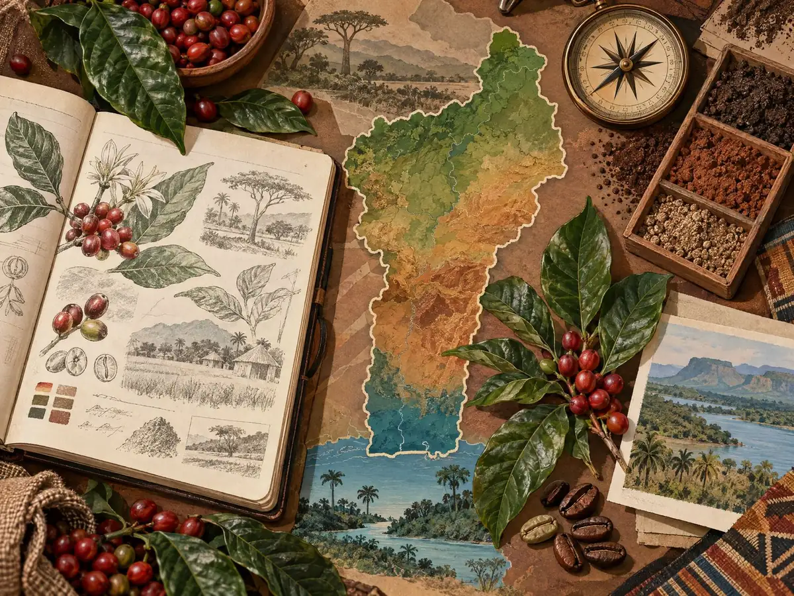

Afrique et Bénin
L’Afrique est le berceau de l’Arabica et un grand producteur de robusta. Cette page réunit des repères sourcés pour l’Afrique et pour le Bénin ; les chiffres béninois restent à confirmer.
L’essentiel en trois points
- Ouganda : 5,6 millions de sacs en 2022/23, en baisse de 6,8 % sur 6,0 millions en 2021/22 [1].
- L’Ouganda est le 4e producteur mondial de robusta (prévision 2025/26) derrière le Vietnam, le Brésil et l’Indonésie [2].
- Bénin : environ 55 t en 2024 selon une reprise des séries FAOSTAT, chiffre estimé et à confirmer [3].
Approfondir
Touchez un titre pour ouvrir ou fermer la rubrique.
Éthiopie, berceau de l’Arabica
L’Éthiopie a enregistré la croissance la plus dynamique de la production africaine : +2,7 % par an en moyenne sur 43 ans, et +5,5 % par an depuis 1990 (rapport OIC de 2015) [4].
Ouganda
Bénin : chiffres à confirmer
Les séries FAOSTAT reprises par des sites secondaires donnent environ 55 t de café vert en 2024 (valeur estimée), contre un record de 3,0 kt en 1984 [3] [5]. Un autre site cite des données OIC selon lesquelles la production enregistrée serait tombée à zéro à partir des années 1990 [6]. Ces sources se contredisent : le chiffre est à confirmer auprès de FAOSTAT et de l’OIC.
Une rencontre entre l’Alliance interafricaine du café (IACO) et le gouvernement du Bénin a porté sur le développement de la filière nationale [7].
Autres pays africains
Côte d’Ivoire, Cameroun, Tanzanie, Kenya, Rwanda, Burundi, Togo, Ghana : fiches à documenter à partir de la base statistique de l’OIC [8]. Aucun chiffre n’est affiché tant qu’il n’est pas vérifié.
Image : illustration générée pour le site, à valeur éditoriale, pas un document photographique.
Termes du dictionnaire
Références
Les affirmations renvoient aux références numérotées ci-dessous, avec leur date de consultation. Les rubriques marquées « à documenter » n’ont pas encore de source vérifiée et n’affirment rien. Certaines sources sont secondaires : leur nature est indiquée dans leur intitulé.
- OIC, Coffee Report and Outlook, décembre 2023 · consulté le 20 novembre 2026
- USDA FAS, Coffee: World Markets and Trade (juin 2025) · consulté le 20 novembre 2026
- Waramina, production de café au Bénin (série FAOSTAT, reprise secondaire) · consulté le 20 novembre 2026
- OIC (2015), Overview of the coffee sector in Africa (ICC-114-5) · consulté le 20 novembre 2026
- Terra Cultiva, café vert au Bénin (série FAOSTAT, reprise secondaire) · consulté le 20 novembre 2026
- Beanesis, café du Bénin (données OIC citées, reprise secondaire) · consulté le 20 novembre 2026
- IACO, rencontre avec le gouvernement du Bénin sur la filière café · consulté le 20 novembre 2026
- OIC, base de données statistiques mondiales du café · consulté le 20 novembre 2026